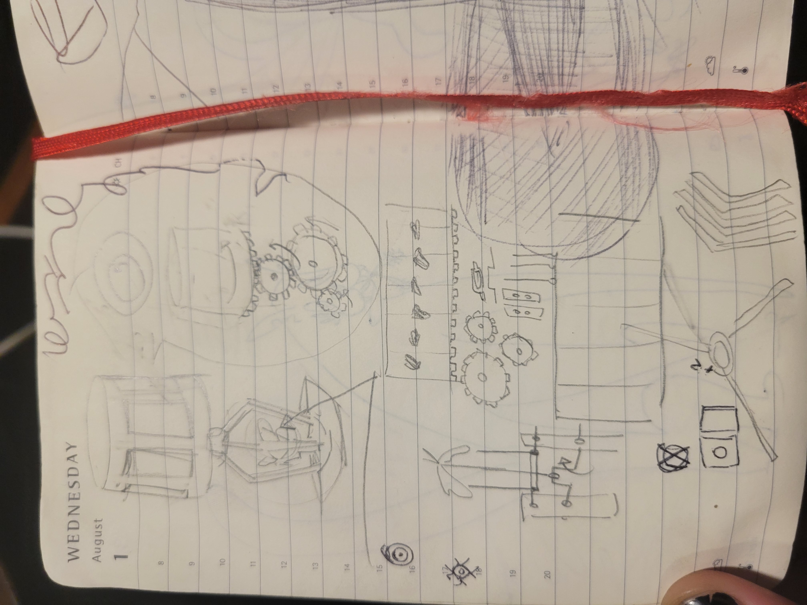
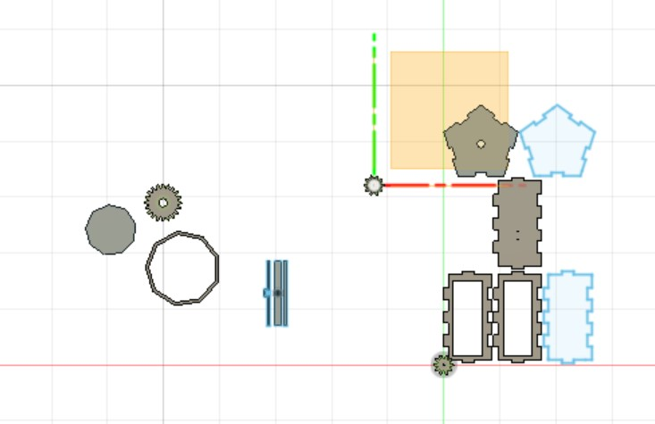
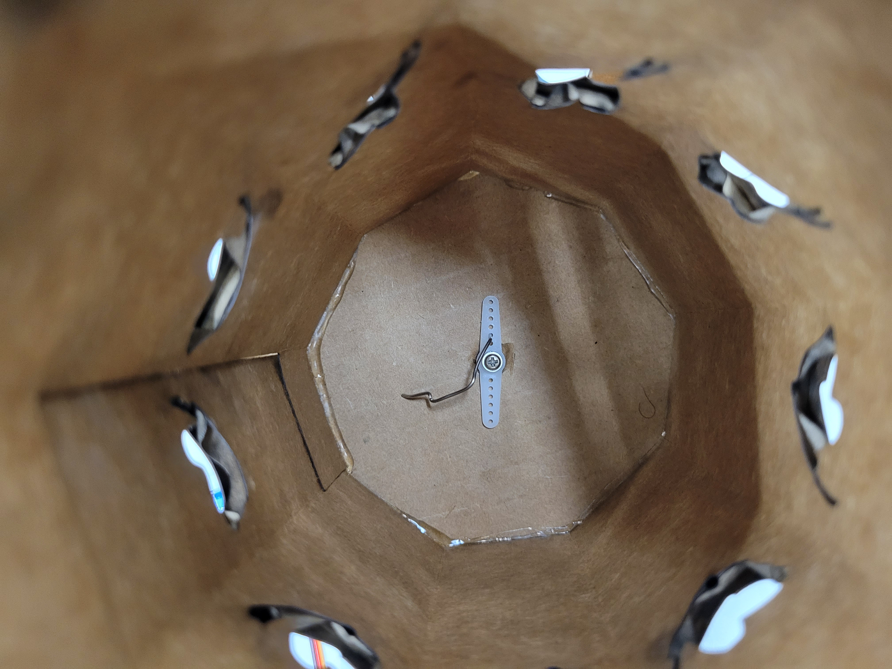
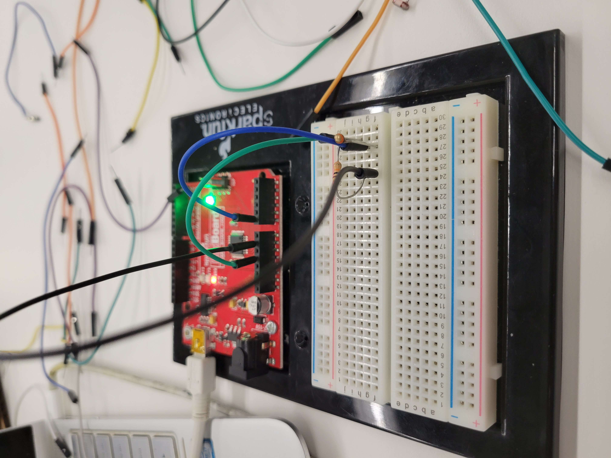

<br>
#### Weeks 3 and 4 kitetic sculpture + coding


<img src="33.gif" alt="drawings of the initial concept," style="width:500px;height:600px;">
<img src="34.gif" alt=" another sketch screenshot of CAD" style="width:500px;height:600px;">
I'd initially conceptualised this as a lamp/sculpture that would use two kinds of motion, there would be a hole in the base through whitch a sculpture of a bird would be flapping its wings and also the top part would be an animation wheel. In the end I ended up only really finishing the animation wheel, but I worked on them concurently so I've included documentation of that prosses as well.
I used the pressfit box generator we talked about in class but made some modifications.
<img src="35.gif" alt="drawings of the initial concept," style="width:500px;height:600px;">
Because the box was hexoganal instead of square the holes for the moving part needed to be hand drilled at an angle which I hadn't anticipated.
<img src="36.jpg" alt=" another sketch screenshot of CAD" style="width:500px;height:600px;">
<img src="37.jpg" alt="drawings of the initial concept," style="width:500px;height:600px;">
<img src="38.gif" alt=" another sketch screenshot of CAD" style="width:500px;height:600px;">

the motor didn't catch well in the cardboard but that little peice of metal pinned it together and prevented that problem.
<img src="310.gif" alt=" another sketch screenshot of CAD" style="width:500px;height:600px;">
<img src="311.gif" alt=" device rotating," style="width:500px;height:600px;">

I tried a couple different ways to set up the arduino code for the servo, setting the position to spin to 30, 90 180 (and attempted 360 which was not possible) before I realised the servo I chose wasen't able to spin a full 360 degrees. I also tried to use the knob to controll the speed before realising the use-case that made more sense there was position because the servo could only rotate 180degrees.